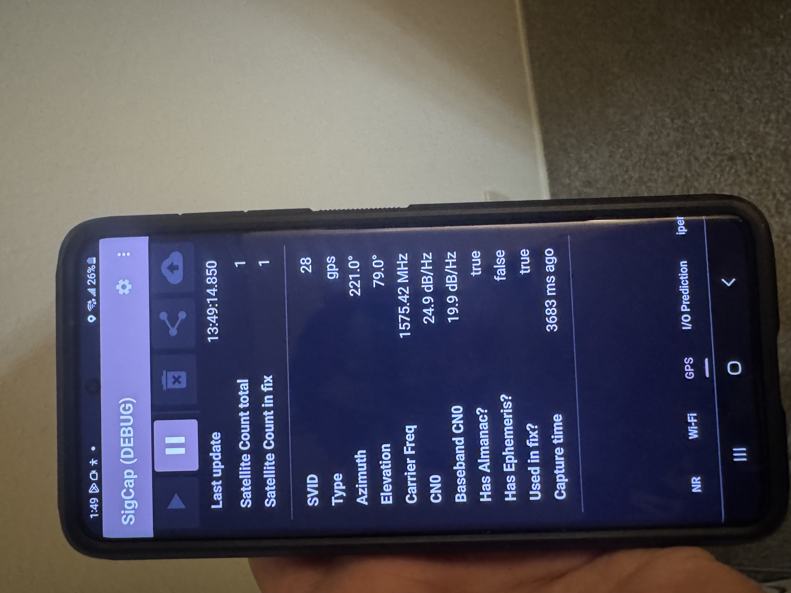

GNSS Indoor/Outdoor (I/O) Classification & SigCap Android Deployment
Built large multi-city GNSS datasets across the US, Europe, and Asia using SigCap. Engineered C/N₀ features, elevation-weighted metrics, and temporal bagging for indoor/outdoor classification. Deployed ONNX models on-device inside SigCap for real-time Android-based I/O inference, using multi-instance learning to improve performance in near-window and urban-canyon conditions.